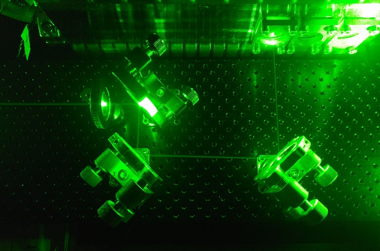

<!DOCTYPE html>
<html>
<head><meta name="generator" content="Hexo 3.9.0">
  <meta charset="utf-8">
  

  
  <title>关于马克斯普朗克量子光学研究所 | blog</title>
  <meta name="viewport" content="width=device-width, initial-scale=1, maximum-scale=1">
  <meta name="description" content="相关资料搜索【如有侵权，请联系删除，谢谢！】  img { max-width: 85%; height: auto; width: auto; width: auto; }      【马克斯普朗克量子光学研究所】IMPRS_APS   项目简介：     BMBF项目 - 使用量子光学的量子中继器/用于量子中继器的原子腔系统 慕尼黑量子科学与技术中心 慕尼黑先进光子学中心（MAP） 欧洲激光研">
<meta name="keywords" content="量子,光学">
<meta property="og:type" content="article">
<meta property="og:title" content="关于马克斯普朗克量子光学研究所">
<meta property="og:url" content="https://qumoptly.github.io/blog/2019/07/18/关于马克斯普朗克量子光学研究所/index.html">
<meta property="og:site_name" content="blog">
<meta property="og:description" content="相关资料搜索【如有侵权，请联系删除，谢谢！】  img { max-width: 85%; height: auto; width: auto; width: auto; }      【马克斯普朗克量子光学研究所】IMPRS_APS   项目简介：     BMBF项目 - 使用量子光学的量子中继器/用于量子中继器的原子腔系统 慕尼黑量子科学与技术中心 慕尼黑先进光子学中心（MAP） 欧洲激光研">
<meta property="og:locale" content="default">
<meta property="og:image" content="https://qumoptly.github.io/blog/2019/07/18/关于马克斯普朗克量子光学研究所/IMG_2430.jpg">
<meta property="og:image" content="https://qumoptly.github.io/blog/2019/07/18/关于马克斯普朗克量子光学研究所/objective.jpg">
<meta property="og:image" content="https://qumoptly.github.io/blog/2019/07/18/关于马克斯普朗克量子光学研究所/science_chamber.jpg">
<meta property="og:image" content="https://qumoptly.github.io/blog/2019/07/18/关于马克斯普朗克量子光学研究所/slower_end.jpg">
<meta property="og:image" content="https://qumoptly.github.io/blog/2019/07/18/关于马克斯普朗克量子光学研究所/MOT-2371.jpg">
<meta property="og:image" content="https://qumoptly.github.io/blog/2019/07/18/关于马克斯普朗克量子光学研究所/MOT-2386.jpg">
<meta property="og:image" content="https://qumoptly.github.io/blog/2019/07/18/关于马克斯普朗克量子光学研究所/green-IMG_20181031_173014.jpg">
<meta property="og:image" content="https://qumoptly.github.io/blog/2019/07/18/关于马克斯普朗克量子光学研究所/green-IMG_20181031_173028.jpg">
<meta property="og:updated_time" content="2019-07-19T12:19:55.737Z">
<meta name="twitter:card" content="summary">
<meta name="twitter:title" content="关于马克斯普朗克量子光学研究所">
<meta name="twitter:description" content="相关资料搜索【如有侵权，请联系删除，谢谢！】  img { max-width: 85%; height: auto; width: auto; width: auto; }      【马克斯普朗克量子光学研究所】IMPRS_APS   项目简介：     BMBF项目 - 使用量子光学的量子中继器/用于量子中继器的原子腔系统 慕尼黑量子科学与技术中心 慕尼黑先进光子学中心（MAP） 欧洲激光研">
<meta name="twitter:image" content="https://qumoptly.github.io/blog/2019/07/18/关于马克斯普朗克量子光学研究所/IMG_2430.jpg">
  
    <link rel="alternate" href="/blog/atom.xml" title="blog" type="application/atom+xml">
  
  
    <link rel="icon" href="/favicon.png">
  
  
    <link href="//fonts.googleapis.com/css?family=Source+Code+Pro" rel="stylesheet" type="text/css">
  
  <link rel="stylesheet" href="/blog/css/style.css">
</head>
</html>
<body>
  <div id="container">
    <div id="wrap">
      <header id="header">
  <div id="banner"></div>
  <div id="header-outer" class="outer">
    <div id="header-title" class="inner">
      <h1 id="logo-wrap">
        <a href="/blog/" id="logo">blog</a>
      </h1>
      
    </div>
    <div id="header-inner" class="inner">
      <nav id="main-nav">
        <a id="main-nav-toggle" class="nav-icon"></a>
        
          <a class="main-nav-link" href="/blog/">Home</a>
        
          <a class="main-nav-link" href="/blog/archives">Archives</a>
        
      </nav>
      <nav id="sub-nav">
        
          <a id="nav-rss-link" class="nav-icon" href="/blog/atom.xml" title="RSS Feed"></a>
        
        <a id="nav-search-btn" class="nav-icon" title="Search"></a>
      </nav>
      <div id="search-form-wrap">
        <form action="//google.com/search" method="get" accept-charset="UTF-8" class="search-form"><input type="search" name="q" class="search-form-input" placeholder="Search"><button type="submit" class="search-form-submit">&#xF002;</button><input type="hidden" name="sitesearch" value="https://qumoptly.github.io/blog"></form>
      </div>
    </div>
  </div>
</header>
      <div class="outer">
        <section id="main"><article id="post-关于马克斯普朗克量子光学研究所" class="article article-type-post" itemscope itemprop="blogPost">
  <div class="article-meta">
    <a href="/blog/2019/07/18/关于马克斯普朗克量子光学研究所/" class="article-date">
  <time datetime="2019-07-18T13:17:07.000Z" itemprop="datePublished">2019-07-18</time>
</a>
    
  <div class="article-category">
    <a class="article-category-link" href="/blog/categories/关注/">关注</a>
  </div>

  </div>
  <div class="article-inner">
    
    
      <header class="article-header">
        
  
    <h1 class="article-title" itemprop="name">
      关于马克斯普朗克量子光学研究所
    </h1>
  

      </header>
    
    <div class="article-entry" itemprop="articleBody">
      
        <h1 id="相关资料搜索"><a href="#相关资料搜索" class="headerlink" title="相关资料搜索"></a>相关资料搜索</h1><p><font size="2">【如有侵权，请联系删除，谢谢！】</font></p>
<style>
img { max-width: 85%; height: auto; width: auto; width: auto; }
</style>  


<h2 id="【马克斯普朗克量子光学研究所】"><a href="#【马克斯普朗克量子光学研究所】" class="headerlink" title="【马克斯普朗克量子光学研究所】"></a>【马克斯普朗克量子光学研究所】</h2><p><a href="http://www2.mpq.mpg.de/APS/" target="_blank" rel="noopener">IMPRS_APS</a> </p>
<hr>
<h3 id="项目"><a href="#项目" class="headerlink" title="项目"></a>项目</h3><p><a href="https://www.mpq.mpg.de/4742664/int_coop" target="_blank" rel="noopener">简介： </a></p>
<hr>
<blockquote>
<ul>
<li><a href="https://www.forschung-it-sicherheit-kommunikationssysteme.de/projekte/q-link.x" target="_blank" rel="noopener">BMBF项目 - 使用量子光学的量子中继器/用于量子中继器的原子腔系统</a><br></li>
<li><a href="http://mcqst.de/" target="_blank" rel="noopener">慕尼黑量子科学与技术中心</a><br></li>
<li><a href="https://www.munich-photonics.de/en/" target="_blank" rel="noopener">慕尼黑先进光子学中心（MAP）</a><br></li>
<li><a href="https://www.laserlab-europe.eu/" target="_blank" rel="noopener">欧洲激光研究基础设施综合计划</a><br></li>
<li><a href="http://qurope.eu/projects/" target="_blank" rel="noopener">欧洲量子信息处理与通信</a><br></li>
<li><a href="http://www.simulaqron.org/" target="_blank" rel="noopener">SimulaQron</a><br></li>
<li><a href="https://qmanybody.de/" target="_blank" rel="noopener">量子多体系统</a><br></li>
</ul>
</blockquote>
<div align="center">
  
  <a href="./origin/IMG_2430.jpg" target="_blank">原图 </a>
  
  <a href="./origin/objective.jpg" target="_blank">原图 </a>
  
  <a href="./origin/science_chamber.jpg" target="_blank">原图 </a>
  
  <a href="./origin/slower_end.jpg" target="_blank">原图 </a>
  
  <a href="./origin/MOT-2371.jpg" target="_blank">原图 </a>
  
  <a href="./origin/MOT-2386.jpg" target="_blank">原图 </a>
  
  <a href="./origin/green-IMG_20181031_173014.jpg" target="_blank">原图 </a>
  
  <a href="./origin/green-IMG_20181031_173028.jpg" target="_blank">原图 </a>
</div>

<h2 id="Research"><a href="#Research" class="headerlink" title="Research"></a><a href="https://www.mpq.mpg.de/3744600/research" target="_blank" rel="noopener">Research</a></h2><hr>
<ul>
<li><br></li>
<li><br>

</li>
</ul>
<h2 id="Research-News"><a href="#Research-News" class="headerlink" title="Research News"></a><a href="https://www.mpq.mpg.de/5807152/2019" target="_blank" rel="noopener">Research News</a></h2><hr>
<ul>
<li><br></li>
<li><br>
</li>
</ul>

      
    </div>
    <footer class="article-footer">
      <a data-url="https://qumoptly.github.io/blog/2019/07/18/关于马克斯普朗克量子光学研究所/" data-id="cjya3s7co00064o64j3gcrq2n" class="article-share-link">Share</a>
      
      
  <ul class="article-tag-list"><li class="article-tag-list-item"><a class="article-tag-list-link" href="/blog/tags/光学/">光学</a></li><li class="article-tag-list-item"><a class="article-tag-list-link" href="/blog/tags/量子/">量子</a></li></ul>

    </footer>
  </div>
  
    
<nav id="article-nav">
  
    <a href="/blog/2019/07/18/关于格拉斯哥/" id="article-nav-newer" class="article-nav-link-wrap">
      <strong class="article-nav-caption">Newer</strong>
      <div class="article-nav-title">
        
          关于格拉斯哥
        
      </div>
    </a>
  
  
    <a href="/blog/2019/07/17/量子纠缠图片/" id="article-nav-older" class="article-nav-link-wrap">
      <strong class="article-nav-caption">Older</strong>
      <div class="article-nav-title">量子纠缠图片</div>
    </a>
  
</nav>

  
</article>

</section>
        
          <aside id="sidebar">
  
    
  <div class="widget-wrap">
    <h3 class="widget-title">Categories</h3>
    <div class="widget">
      <ul class="category-list"><li class="category-list-item"><a class="category-list-link" href="/blog/categories/光学/">光学</a></li><li class="category-list-item"><a class="category-list-link" href="/blog/categories/关注/">关注</a></li><li class="category-list-item"><a class="category-list-link" href="/blog/categories/教程/">教程</a></li></ul>
    </div>
  </div>


  
    
  <div class="widget-wrap">
    <h3 class="widget-title">Tags</h3>
    <div class="widget">
      <ul class="tag-list"><li class="tag-list-item"><a class="tag-list-link" href="/blog/tags/hexo/">hexo</a></li><li class="tag-list-item"><a class="tag-list-link" href="/blog/tags/光学/">光学</a></li><li class="tag-list-item"><a class="tag-list-link" href="/blog/tags/宇宙，黑洞，量子/">宇宙，黑洞，量子</a></li><li class="tag-list-item"><a class="tag-list-link" href="/blog/tags/激光/">激光</a></li><li class="tag-list-item"><a class="tag-list-link" href="/blog/tags/算法/">算法</a></li><li class="tag-list-item"><a class="tag-list-link" href="/blog/tags/量子/">量子</a></li></ul>
    </div>
  </div>


  
    
  <div class="widget-wrap">
    <h3 class="widget-title">Tag Cloud</h3>
    <div class="widget tagcloud">
      <a href="/blog/tags/hexo/" style="font-size: 10px;">hexo</a> <a href="/blog/tags/光学/" style="font-size: 15px;">光学</a> <a href="/blog/tags/宇宙，黑洞，量子/" style="font-size: 10px;">宇宙，黑洞，量子</a> <a href="/blog/tags/激光/" style="font-size: 10px;">激光</a> <a href="/blog/tags/算法/" style="font-size: 10px;">算法</a> <a href="/blog/tags/量子/" style="font-size: 20px;">量子</a>
    </div>
  </div>

  
    
  <div class="widget-wrap">
    <h3 class="widget-title">Archives</h3>
    <div class="widget">
      <ul class="archive-list"><li class="archive-list-item"><a class="archive-list-link" href="/blog/archives/2019/07/">July 2019</a></li></ul>
    </div>
  </div>


  
    
  <div class="widget-wrap">
    <h3 class="widget-title">Recent Posts</h3>
    <div class="widget">
      <ul>
        
          <li>
            <a href="/blog/2019/07/18/关于格拉斯哥/">关于格拉斯哥</a>
          </li>
        
          <li>
            <a href="/blog/2019/07/18/关于马克斯普朗克量子光学研究所/">关于马克斯普朗克量子光学研究所</a>
          </li>
        
          <li>
            <a href="/blog/2019/07/17/量子纠缠图片/">量子纠缠图片</a>
          </li>
        
          <li>
            <a href="/blog/2019/07/16/关于craig-gidney/">关于craig.gidney</a>
          </li>
        
          <li>
            <a href="/blog/2019/07/16/hello-world/">Hello World</a>
          </li>
        
      </ul>
    </div>
  </div>

  
</aside>
        
      </div>
      <footer id="footer">
  
  <div class="outer">
    <div id="footer-info" class="inner">
      &copy; 2019 qumoptly<br>
      Powered by <a href="http://hexo.io/" target="_blank">Hexo</a>
    </div>
  </div>
</footer>
    </div>
    <nav id="mobile-nav">
  
    <a href="/blog/" class="mobile-nav-link">Home</a>
  
    <a href="/blog/archives" class="mobile-nav-link">Archives</a>
  
</nav>
    

<script src="//ajax.googleapis.com/ajax/libs/jquery/2.0.3/jquery.min.js"></script>


  <link rel="stylesheet" href="/blog/fancybox/jquery.fancybox.css">
  <script src="/blog/fancybox/jquery.fancybox.pack.js"></script>


<script src="/blog/js/script.js"></script>


  </div>
</body>
</html>